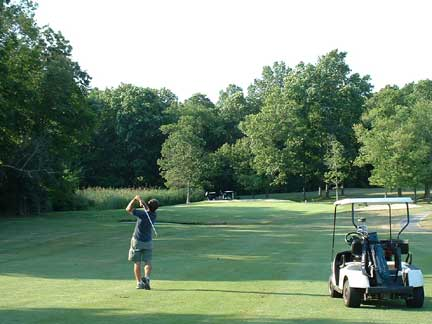

How to Be Stylish on the Golf Course

Golf is a great game and if you want to look stylish as you play, it isn't hard with a little grooming, appropriate clothing and sensible approach to makeup. This article is directed at women and girls playing golf.
Steps
- Start with knowing how to play golf. This is a key part of being on the golf course and you should be comfortable with wielding the clubs.
- Realize that hair color and length matter not one whit. What matters is making sure that the hair is not in your face, especially on a windy golf course. Tie it back! This is sport, not a fashion parade.
- Buy some golf shorts and a polo shirt that fits perfectly. If you don't know what to get, get advice from a spots store. Golf shorts are neat, long and have space for movement as you swing those clubs.
- Put the golf glove on the back pocket sticking out like the pros do. And actually use it as you move around the course. Otherwise, there isn't much point purchasing a pair.
- Obtain a visor that matches your outfit. Visors are important to reduce sun glare and sunburn. They also help to keep your hair in place.
- Keep makeup to a minimum. Remember, this is a sport and makeup should be used sparingly. You can touch up in the clubhouse after the game if needed. Keep the supplies in your locker back at the clubhouse.
Tips
- Remove jewelry that dangles. You don't want it to catch or distract you as you concentrate.
- Get private lessons if you need to learn to play golf or brush up on the techniques. Your money is better spent perfecting your technique than purchasing over-priced golf clothing aimed at "looking the part".